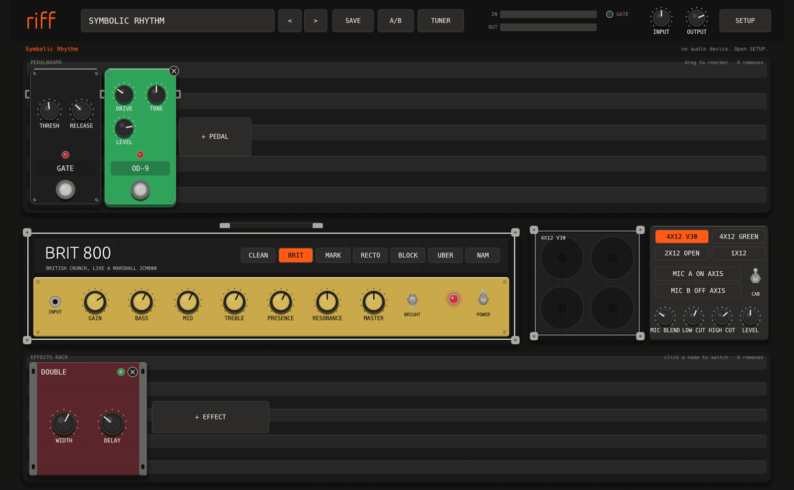
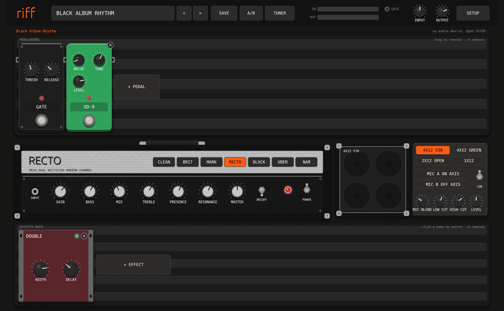

riff
metal amp simThis tutorial starts with the cable and ends with your own tones. Do the steps in sequence the first time.
Contents
- What you need
- Install riff
- Connect the audio interface
- Set up the audio in riff
- The screen
- Play a preset
- The signal chain
- Make a metal tone
- Tone recipes
- Amps
- Cabinets and IRs
- Pedals
- Effects
- Tuner and drop tunings
- Save and compare tones
- NAM captures
- MIDI and expression pedal
- Use the plugin in a DAW
- Troubleshooting
- All factory presets
1What you need
- A Mac. riff is tested on macOS.
- An audio interface with an instrument input. This tutorial uses a Focusrite Scarlett Solo. Other interfaces work the same way.
- A guitar and a cable.
- Headphones or studio monitors, connected to the interface.
Do not connect the guitar to the microphone input of the computer. The level is wrong and the latency is high.
2Install riff
- Install Rust:
curl https://sh.rustup.rs -sSf | sh. - Get the source and install the app:
git clone https://github.com/rodbove/riff cd riff ./scripts/install.sh - Open riff from Applications or Launchpad.
- When macOS asks for microphone access, click Allow. riff needs this access to read the audio interface.
If you clicked Don't Allow, open System Settings, then Privacy & Security, then Microphone, and turn on riff.
3Connect the audio interface
These steps are for the Scarlett Solo.
- Connect the Scarlett to the Mac with the USB cable.
- Connect the guitar to the INST input. This is input 2, on the front at the right. Input 1 is the microphone input.
- Push the INST button so that it is on.
- Turn the guitar volume to full.
- Play hard chords. Turn the GAIN knob of input 2 until the ring around it is green on the loudest notes. It must not go red.
- Turn DIRECT MONITOR off. If it is on, you also hear the dry guitar.
- Connect headphones to the headphone output, or monitors to the rear outputs.
Good gain staging is the most important step for a good tone. Too little gain makes the amps feel weak. Too much gain causes digital clipping, which sounds harsh.
4Set up the audio in riff
- Click SETUP at the top right.
- Set INPUT to the Scarlett.
- Set GUITAR ON to the input of your guitar. riff selects input 2 automatically for a Scarlett Solo.
- Set OUTPUT to the Scarlett.
- Set RATE to 48000 Hz.
- Set BUFFER to 128 samples.
- Click APPLY.
- Play. The IN meter at the top moves. The status line shows the latency and the number of dropouts.
| Buffer | Feel | Use it when |
|---|---|---|
| 64 | Lowest latency | Your Mac is fast and you hear no crackles. |
| 128 | Feels like an amp | Default. Good for most Macs. |
| 256 | Small delay | You hear crackles, or you use a large NAM capture. |
Use the INPUT knob at the top right to set the level into riff, and the OUTPUT knob to set the volume. The limiter at the end of the chain prevents clipping at the output.
5The screen

| Part | What it does |
|---|---|
| Header | Preset name, < >, SAVE, A/B, TUNER, the IN and OUT meters, the GATE light, the INPUT and OUTPUT knobs and SETUP. |
| Note line | Below the header. It shows the tip of the preset, for example the tuning. |
| Pedalboard | The pedals before the amp. They play from left to right. |
| Amp | The amp head with the model buttons, the knobs, BRIGHT and POWER. |
| Cabinet | The speaker model, the two mics, MIC BLEND, LOW CUT, HIGH CUT, LEVEL and the CAB switch. |
| Effects rack | The effects after the cabinet: modulation, delay, reverb and more. |
Mouse and keys
| Drag a knob up or down | Change the value |
| Shift + drag | Fine change |
| Mouse wheel on a knob | Change the value in steps |
| Double-click a knob | Reset to the default value |
| Click a footswitch | Turn a pedal on or off. The red light shows that the pedal is on. |
| Drag a pedal | Change the order of the pedals |
| Click X | Remove a pedal or an effect |
| ← → | Previous or next preset |
| T | Tuner on or off |
6Play a preset
- Click the preset name in the header. The preset browser opens.
- Select a band, for example METALLICA.
- Select an album, for example Master of Puppets.
- Click a song or a part, for example Puppets Rhythm.
- Read the note line below the header. It tells you the tuning and how to play the tone.
- Play. Use ← and → to try the next presets.
The presets are a start point in the style of the record, not a copy. Your guitar, pickups and pick attack change the sound. Adjust GAIN and the cabinet first.
Rhythm, lead and clean
Most albums have a rhythm preset for the riffs, a lead or solo preset with more mids, delay and reverb, and a clean preset for intros. Change the preset when the part of the song changes.
7The signal chain
The sound goes through riff in this sequence:
- The gate reads the clean guitar, but it works after the pedals. This keeps the noise low and the palm mutes tight.
- Pedals before the amp change what the amp gets. A boost here makes the amp tighter and more saturated.
- Effects after the cabinet change the finished sound. Delay and reverb belong here, so they stay clear.
8Make a metal tone
Start with a clean board, then add one part at a time.
- Select the RECTO or BLOCK 51 amp.
- Set GAIN to 6. Set BASS 5, MID 5, TREBLE 6, PRESENCE 6, MASTER 5.
- Select the 4x12 V30 cabinet. Set MIC BLEND to about 30%, so that the on-axis mic is the main sound.
- Click + PEDAL and add OD-9. Set DRIVE to 0 to 2, TONE to 6, LEVEL to 8. This is the classic metal boost: it cuts the low end before the amp and makes palm mutes tight.
- Set the gate THRESH so that the noise stops when you mute the strings, but long notes still ring.
- Play fast palm mutes. If the sound is muddy, lower BASS on the amp or raise LOW CUT on the cabinet. Do not raise GAIN to fix a weak sound. Raise the OD-9 LEVEL instead.
- Click + EFFECT and add DOUBLE. It makes a wide stereo sound, like two guitars recorded left and right.
- Click SAVE and type a name.
Less gain usually sounds heavier. A lot of famous metal rhythm tones have less gain than you expect.
9Tone recipes
| Style | Chain | Tips |
|---|---|---|
| 80s thrash | OD-9 → BRIT 800 or MARK IIC → 4x12 Greenback | Scoop the mids with EQ-10. Keep the gain below 7. |
| Modern tight rhythm | Gate → OD-9 (drive 0) → BLOCK 51 → 4x12 V30 → DOUBLE | Set the gate tight. Raise LOW CUT on the cabinet to about 80 Hz. |
| Big Recto chug | Gate → RECTO → 4x12 V30 | Lower BASS on the amp and raise RESONANCE for a deep low end that stays tight. |
| Swedish death | SWEDISH (all knobs high) → BRIT 800 (low gain) | The pedal does the distortion. The amp only adds the speaker character. |
| Lead | OD-9 → MARK IIC or UBER → DELAY → VERB | More mids, delay at about 400 ms with a 25% mix, a plate reverb. |
| Twin harmony lead | Lead tone → HARMONY | Set INTERVAL to +M3 or +m3 to fit the key of the solo. |
| Clean | COMP → CLEAN TWIN → CHORUS → DELAY → VERB | Turn the guitar volume down a little for a cleaner sound. |
| Acoustic intro | ACOUSTIC → CLEAN TWIN → VERB | Use the neck pickup. Turn the cabinet off for a direct sound. |
10Amps

| Model | Like | Good for |
|---|---|---|
| CLEAN TWIN | Fender Twin, clean | Clean intros, ballads, arpeggios |
| BRIT 800 | Marshall JCM800 | Early Metallica, Death, classic thrash with a boost |
| MARK IIC | Mesa Mark IIC+ | Master of Puppets, Justice, Petrucci |
| RECTO | Mesa Dual Rectifier | Black Album, A7X rhythm, metalcore |
| BLOCK 51 | Peavey 5150 | Arch Enemy, modern metal, breakdowns |
| UBER | Bogner Uberschall or Engl | Death Magnetic, Synyster Gates leads |
Knobs
| GAIN | The preamp drive. More gain gives more distortion and sustain, and more noise. |
| BASS, MID, TREBLE | The tone stack. The knobs affect each other, as on a real amp. |
| PRESENCE | The high end of the power amp. Raise it to cut through a mix. |
| RESONANCE | The deep low end of the power amp. Raise it for a big palm mute. |
| MASTER | The power amp level. High values give more power amp compression and sag. |
| BRIGHT | A switch that adds high end before the gain stages. |
| POWER | Turns the amp off for a direct sound, for example with the ACOUSTIC pedal. |
11Cabinets and IRs
| Model | Sound |
|---|---|
| 4X12 V30 | Tight and aggressive with strong upper mids. The modern metal cabinet. |
| 4X12 GREEN | Greenback speakers. Warm and vintage, with softer highs. Good for 80s tones. |
| 2X12 OPEN | Open back. Airy and less low end. Good for cleans. |
| 1X12 | Small and focused. Good for clean and acoustic sounds. |
- MIC A ON AXIS points at the center of the speaker. It is bright and direct.
- MIC B OFF AXIS points at the edge. It is darker and smoother.
- MIC BLEND mixes the two mics. Start at about 30%.
- LOW CUT removes the low end that makes a mix muddy. HIGH CUT removes fizz.
- The CAB switch turns the cabinet off. Use it with a NAM capture that includes a cabinet.
Load your own IR
- Put WAV impulse response files in
~/Music/riff/ir. - Click MIC A ON AXIS or MIC B OFF AXIS and select a file. The button then shows the file name.
- To go back to the built-in mic, right-click the button.
12Pedals
Click + PEDAL to add a pedal. The board holds up to 8 pedals after the gate.
| Pedal | Knobs | Use |
|---|---|---|
| GATE | THRESH, RELEASE | Stops the noise between notes. Always first. |
| BOOST | LEVEL, TIGHT | Clean boost. TIGHT cuts the low end before the amp. |
| COMP | THRESH, RATIO, ATTACK, RELEASE, MAKEUP, BLEND | Compressor for clean tones and even sustain. |
| OD-9 | DRIVE, TONE, LEVEL | Tube screamer style. With low DRIVE and high LEVEL it is the classic metal boost. |
| RODENT | GAIN, FILTER, LEVEL | RAT style distortion. |
| SWEDISH | LEVEL, LOW, HIGH, DIST | HM-2 style chainsaw distortion for Swedish death metal. |
| WAH | PEDAL, MODE, SENS, Q | MANUAL mode follows PEDAL or an expression pedal. AUTO mode follows your picking. |
| EQ-10 | 31 Hz to 16 kHz, LEVEL | 10-band graphic EQ. Before the amp it shapes the drive. Use the V curve for scooped thrash. |
| OCTAVE | OCT, DRY | Adds a note one octave down. |
| TUNE | SHIFT, MIX | Shifts the pitch by up to 12 semitones. Use it to play drop tunings in E standard. |
| ACOUSTIC | BODY, TOP, LEVEL | Makes an electric guitar sound like an acoustic. |
13Effects
Click + EFFECT to add an effect to the rack. Click the name of an effect to turn it on or off.
| Effect | Knobs | Use |
|---|---|---|
| CHORUS | RATE, DEPTH, MIX | Shimmer for cleans. |
| PHASE | RATE, DEPTH, FEEDBACK, MIX | Slow sweep for leads and cleans. |
| FLANGE | RATE, DEPTH, FEEDBACK, MIX | Jet sound. |
| DELAY | TIME, FEEDBACK, MIX, TONE, MODE | DIGITAL, ANALOG (darker repeats) or PING-PONG (left and right). |
| VERB | TYPE, DECAY, DAMP, PRE, MIX | ROOM, PLATE or HALL. Keep the mix low on rhythm tones. |
| DOUBLE | WIDTH, DELAY | Stereo doubler. Sounds like two guitar takes, left and right. |
| EQ-10 | bands, LEVEL | Post EQ to fit the tone into a mix. |
| HARMONY | INTERVAL, MIX, WIDTH, DELAY | Adds a second guitar at a fixed interval, for twin leads. |
| TREM | RATE, DEPTH, SHAPE, STEREO | Volume pulse. SQUARE gives a stutter effect. |
14Tuner and drop tunings
- Push T, or click TUNER. The output is muted.
- Play one open string. The tuner shows the note and the cents.
- Tune until the display is at 0 cents.
- Push T again to play.
Some songs use a lower tuning, for example D standard or drop C. The note line of the preset tells you the tuning. The preset has a TUNE pedal that is off.
- For the best sound, tune your guitar down and leave TUNE off.
- To play in E standard, turn TUNE on. It shifts the pitch by the value of SHIFT. The tone changes a little.
15Save and compare tones
- Click SAVE. Type a name and confirm.
- Your preset goes to
~/Music/riff/presets, and it shows in the browser with your presets.
A/B compare
- Click A/B one time. riff stores the current tone as A.
- Change the tone.
- Click A/B to switch between A and the new tone.
16NAM captures
A NAM capture is a neural model of a real amp. riff includes no captures. You can download free captures from ToneHunt. Search for 5150, Rectifier, Mark IIC+ or JCM800.
- Put the
.namfiles in~/Music/riff/nam. - Click NAM on the amp and select a file.
- Use INPUT to set the drive into the capture, and OUTPUT to set the level.
- If the capture includes a cabinet, turn the CAB switch off.
- Most captures are made at 48 kHz. Set RATE to 48000 Hz in SETUP. riff shows a warning if the rates are different.
Right-click NAM to select a different file. Click an amp model to go back to the built-in amps.
17MIDI and expression pedal
riff connects to the first MIDI input that it finds, for example a USB foot controller.
| Program change | Selects a preset. Program 0 is the first preset in the list. |
| CC 11 | Moves the PEDAL knob of the WAH. Set the WAH to MANUAL mode and connect an expression pedal. |
18Use the plugin in a DAW
- Build the plugin:
cargo xtask bundle riff-plugin --release. - Copy the bundles:
cp -r target/bundled/riff.vst3 ~/Library/Audio/Plug-Ins/VST3/ cp -r target/bundled/riff.clap ~/Library/Audio/Plug-Ins/CLAP/ - Open your DAW and rescan the plugins.
- Make a mono audio track with the guitar input. Turn on input monitoring.
- Add riff as an effect on the track.
The plugin has the same screen as the app. The DAW can automate these parameters: Input, Output, Gate, Amp Gain, Wah, Delay Mix and Reverb Mix.
Record a DI track
Record the dry guitar and put riff on the track. You can then change the tone after you record.
The plugin has no AU format, so Logic Pro and GarageBand cannot load it. Use Reaper, Ableton Live, Bitwig, Studio One or another VST3 or CLAP host.
19Troubleshooting
| Problem | Solution |
|---|---|
| No sound | Open SETUP. Check INPUT, GUITAR ON and OUTPUT, then click APPLY. Check that the IN meter moves when you play. Check that the tuner is off. |
| The IN meter does not move | Set GUITAR ON to the correct input. Give riff microphone access in System Settings. |
| I hear a clean guitar under the tone | Turn DIRECT MONITOR off on the interface. |
| Crackles or dropouts | Set BUFFER to 256. Close other audio apps. Remove effects that you do not use. |
| Too much noise or hum | Raise the gate THRESH. Lower GAIN. Move away from the computer screen with single-coil pickups. |
| The tone is thin or harsh | Lower the GAIN on the interface if the ring goes red. Lower PRESENCE or HIGH CUT. Try MIC BLEND at 40%. |
| The tone is muddy | Lower BASS. Raise LOW CUT. Add OD-9 with DRIVE at 0 before the amp. |
| NAM rate warning | Set RATE to the rate of the capture, usually 48000 Hz. |
20All factory presets
92 presets. The tag after each name is the amp model.